MASH v FLASH detailed GTEx study
Last updated: 2018-06-27
workflowr checks: (Click a bullet for more information)-
✔ R Markdown file: up-to-date
Great! Since the R Markdown file has been committed to the Git repository, you know the exact version of the code that produced these results.
-
✔ Environment: empty
Great job! The global environment was empty. Objects defined in the global environment can affect the analysis in your R Markdown file in unknown ways. For reproduciblity it’s best to always run the code in an empty environment.
-
✔ Seed:
set.seed(20180609)The command
set.seed(20180609)was run prior to running the code in the R Markdown file. Setting a seed ensures that any results that rely on randomness, e.g. subsampling or permutations, are reproducible. -
✔ Session information: recorded
Great job! Recording the operating system, R version, and package versions is critical for reproducibility.
-
Great! You are using Git for version control. Tracking code development and connecting the code version to the results is critical for reproducibility. The version displayed above was the version of the Git repository at the time these results were generated.✔ Repository version: eb90603
Note that you need to be careful to ensure that all relevant files for the analysis have been committed to Git prior to generating the results (you can usewflow_publishorwflow_git_commit). workflowr only checks the R Markdown file, but you know if there are other scripts or data files that it depends on. Below is the status of the Git repository when the results were generated:
Note that any generated files, e.g. HTML, png, CSS, etc., are not included in this status report because it is ok for generated content to have uncommitted changes.Ignored files: Ignored: .DS_Store Ignored: .Rhistory Ignored: .Rproj.user/ Ignored: docs/.DS_Store Ignored: docs/images/.DS_Store Ignored: output/.DS_Store Untracked files: Untracked: output/gtex2mrandfit.rds Unstaged changes: Modified: analysis/about.Rmd Modified: analysis/index.Rmd Modified: code/gtex2.R Modified: output/gtex2mfit.rds
Expand here to see past versions:
Introduction
Here I return to the GTEx data in order to examine cases where MASH and FLASH lead to different conclusions. While my previous analysis compared MASH and FLASH fits on a random subset of tests, here I follow a workflow analogous to the one suggested for the GTEx data in this MASH vignette.
Fitting Methods
For MASH, I follow the workflow in the vignette linked above, except that I assume that the null tests are uncorrelated (that is, I set \(V = I\)). This is almost certainly not the case, but some more work needs to be done before we can handle the case \(V \ne I\) in FLASH.
The workflow for FLASH proceeds along similar lines to the workflow for MASH:
Using the “OHL” method described in my simulation study, I fit a FLASH object to the “strong” tests (which correspond to the “top” eQTL for each gene — that is, the eQTL with the largest (absolute) raw \(z\)-score). As I point out in my MASH v FLASH vignette, I expect the FLASH loadings to say something about how the strong effects covary. Thus this step is analogous to producing “data-driven” covariance matrices in MASH.
Now I fix the loadings from the first model at their expectation \(EL\) and add them as fixed loadings to a FLASH object. (As usual, I also add a set of 44 fixed one-hot vectors, which can be viewed as analogous to the “canonical” covariance matrices in MASH. See the discussion in my vignette.) With the loadings fixed, I backfit a FLASH object to the random subset of tests to obtain priors \(g_f\) on the factors. I use the random subset rather than the “strong” subset because I want the priors to hold generally, and not just for the strong tests. (For this analysis, I use ash priors rather than point-normal priors, despite results suggesting that ash priors provide little benefit. Due to a bug in the
ebnmpackage, I cannot at present fix \(g_f\) using point-normal priors.)Finally, using the same fixed loadings from step 1 (and one-hot vectors), as well as the ash priors \(g_f\) obtained in step 2, I backfit a FLASH object to the strong tests to get posterior means and variances.
Comments on FLASH fit
flash_fit.strong <- readRDS("./output/gtexstrongfit.rds")
fl.strong <- flash_fit.strong$fits$OHL
flash_fit.random <- readRDS("./output/gtexrandomfit.rds")
fl.random <- flash_fit.random$fit
flash_fit.final <- readRDS("./output/gtex2flfit.rds")
fl <- flash_fit.final$fit- 18.7 minutes were required to greedily add 31 factor/loadings (the last of which was zeroed out) and then backfit both the greedily added factor/loadings and the 44 one-hot vectors added as fixed loadings. (To view plots of the factors, scroll down to the “FLASH factors” section below.) The first factor explains 73% of the variance. The PVE of the remaining factor/loadings is as follows.
strong.pve <- flash_get_pve(fl.strong)
barplot(strong.pve[2:75], ylim=c(0, .03), main="PVE for strong fit", names.arg=2:75)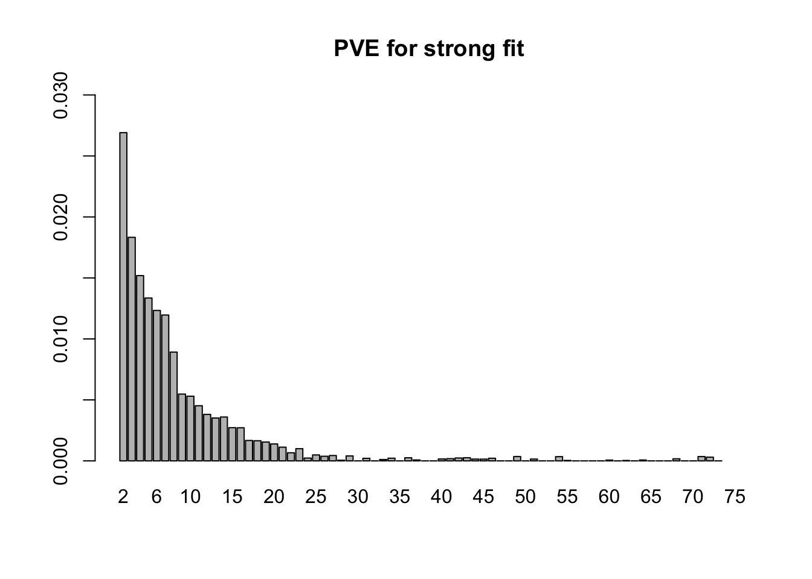
Expand here to see past versions of pve.strong-1.png:
| Version | Author | Date |
|---|---|---|
| 89b9e69 | Jason Willwerscheid | 2018-06-26 |
- 4.0 minutes were needed to fit the 75 fixed loadings from step 1 to the random subset of tests. Now the first factor explains only 21% of the variance, and the PVE of the remaining factors is as follows.
random.pve <- flash_get_pve(fl.random)
barplot(random.pve[2:75], ylim=c(0, .03), main="PVE for random fit", names.arg=2:75)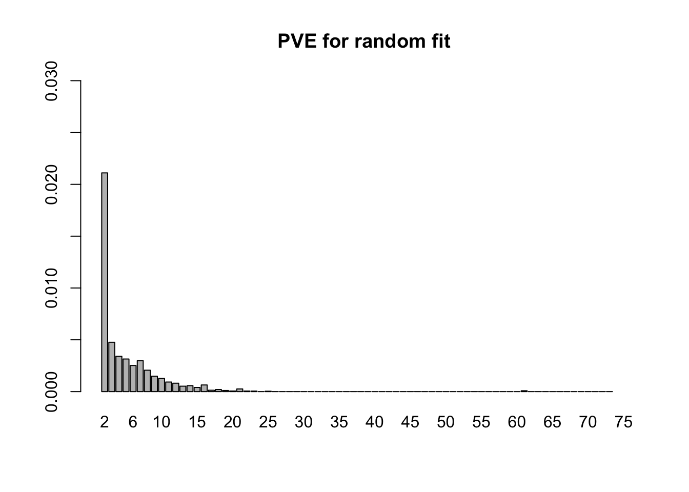
Expand here to see past versions of pve.random-1.png:
| Version | Author | Date |
|---|---|---|
| 89b9e69 | Jason Willwerscheid | 2018-06-26 |
- The final backfitting (using the fixed loadings from step 1 and the priors on the factors from step 2) took 13.4 minutes. (Recall that I am using ash priors. Point-normal priors would likely require less time.) The first factor now explains 76% of the variance, with the PVE of the remaining factors as follows. (The moderately-sized PVE at index 61 corresponds to the one-hot vector for Pancreas).
final.pve <- flash_get_pve(fl)
barplot(final.pve[2:75], ylim=c(0, .03), main="PVE for final fit", names.arg=2:75)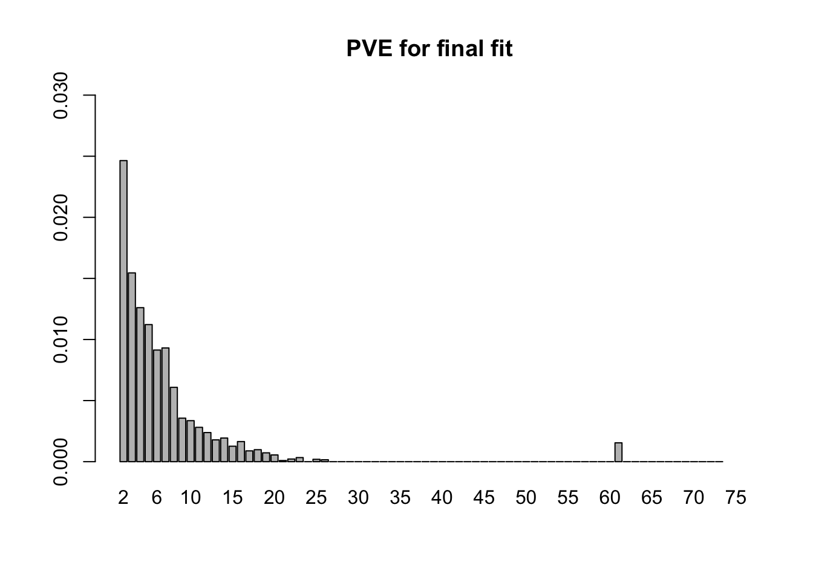
Expand here to see past versions of pve.final-1.png:
| Version | Author | Date |
|---|---|---|
| 89b9e69 | Jason Willwerscheid | 2018-06-26 |
MASH v FLASH initial observations
The posterior means are mostly similar (correlation coefficient = 0.98), but there do seem to be important discrepancies. (The dashed line below plots \(y = x\).)
Indeed, at both 5% and 1% significance levels, MASH and FLASH disagree in about 17-18% of cases.
m.pm <- t(get_pm(m))
fl.pm <- flash_get_lf(fl)
m.lfsr <- t(get_lfsr(m))
fl.lfsr <- readRDS("./output/gtex2lfsr.rds")
confusion_matrix <- function(t) {
mash_signif <- m.lfsr <= t
flash_signif <- fl.lfsr <= t
round(table(mash_signif, flash_signif)
/ length(mash_signif), digits=3)
}
confusion_matrix(.05) flash_signif
mash_signif FALSE TRUE
FALSE 0.378 0.065
TRUE 0.119 0.438confusion_matrix(.01) flash_signif
mash_signif FALSE TRUE
FALSE 0.503 0.045
TRUE 0.126 0.326Choosing a significance threshold
Note that (as pointed out in my previous analysis of GTEx data) FLASH is more conservative than MASH. To achieve the greatest similarity between fits, I calibrate thresholds before comparing MASH and FLASH on individual tests. Setting the FLASH significance threshold at 5%, I set the threshold for MASH at the level that gives the greatest possible agreement between FLASH and MASH.
calibrate_t <- function(t) {
mash_signif <- m.lfsr <= t
flash_signif <- fl.lfsr <= .05
(sum(mash_signif & flash_signif) + sum(!mash_signif & !flash_signif)) / length(mash_signif)
}
ts <- seq(.001, .15, by=.001)
calibrated <- rep(0, length(ts))
for (j in 1:length(ts)) {
calibrated[j] <- calibrate_t(ts[j])
}
plot(ts, calibrated, type='l', xlab="MASH threshold", ylab="% agreement")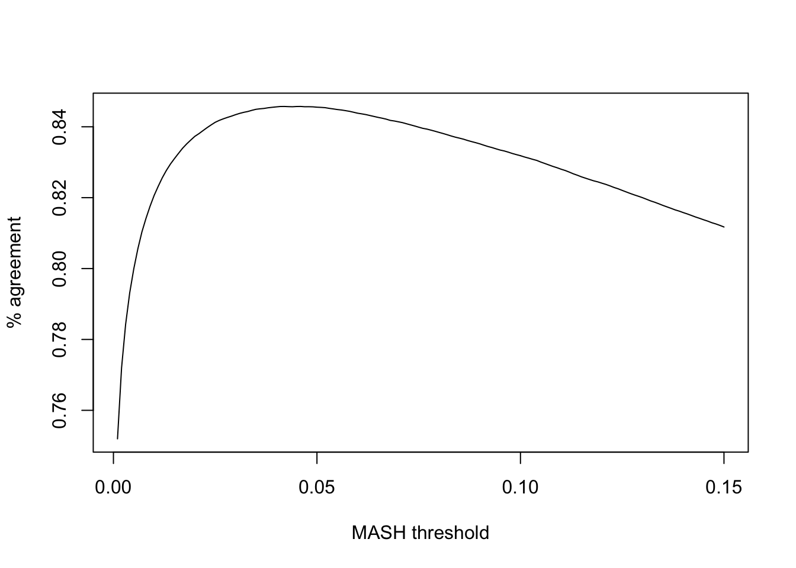
Expand here to see past versions of calibrate-1.png:
| Version | Author | Date |
|---|---|---|
| 89b9e69 | Jason Willwerscheid | 2018-06-26 |
The maximum agreement occurs at:
mash_t <- ts[which.max(calibrated)]
mash_t[1] 0.018So, I will adjust for the relative conservativeness of FLASH by declaring effects significant according to FLASH when they have an LFSR \(\le 0.05\) and significant according to MASH when they have an LFSR \(\le 0.018\).
Effects significant in FLASH but not MASH
In the plots below, I examine tests with regard to which FLASH and MASH strongly disagree.
There are six tests for which there are 26 or more conditions that FLASH finds significant but MASH does not. They are all tests with a very large effect size in a single condition. Whereas MASH tends to only find this one condition to be significant, FLASH often finds that other conditions share a smaller yet significant effect (this effect is often roughly identical either among all conditions or separately among brain and non-brain tissues). It is worth noting that my detailed simulation study found that MASH had especially low power on a combination of small effects shared among conditions and a large effect unique to a single condition. Thus FLASH might very well match the reality of the situation in these cases.
The raw \(z\)-scores are plotted as hollow circles. The FLASH posterior means are plotted as squares, with significant effects (LFSR \(\le .05\)) colored light red and highly significant effects (LFSR \(\le .01\)) colored dark red. MASH posterior means are plotted as triangles, with significant effects (LFSR \(\le 0.018\)) colored light blue and highly significant effects (LFSR \(\le \frac{0.018}{5}\)) colored dark blue.
gtex <- readRDS(gzcon(url("https://github.com/stephenslab/gtexresults/blob/master/data/MatrixEQTLSumStats.Portable.Z.rds?raw=TRUE")))
strong <- gtex$strong.z
plot_comparison <- function(n, legend_loc) {
plot(strong[n, ], pch=1, col="black", ylab="",
main=paste0("Test #", n))
col = rep("peachpuff", 44)
col[fl.lfsr[, n] <= .05] <- "tomato"
col[fl.lfsr[, n] <= .01] <- "tomato4"
points(fl.pm[, n], pch=15, col=col, cex=.8)
col = rep("peachpuff", 44)
col[m.lfsr[, n] <= mash_t] <- "turquoise"
col[m.lfsr[, n] <= mash_t/5] <- "slateblue4"
points(m.pm[, n], pch=17, col=col, cex=.8)
abline(0, 0)
# segments(6.5, -1, 6.5, 1)
# segments(16.5, -1, 16.5, 1)
legend(x=legend_loc, legend=c("raw z-score", "flash pm", "mash pm"), pch=c(1, 15, 17), col=c("black", "tomato4", "slateblue4"))
}
fl.signif <- fl.lfsr <= .05
m.signif <- m.lfsr <= mash_t
flnotm <- fl.signif & !m.signif
ex_flnotm <- which(colSums(flnotm) >= 26)
legend_loc = c("bottomleft", "topleft", "bottomleft", "topleft", "bottomleft", "topleft")
for (i in 1:length(ex_flnotm)) {
plot_comparison(ex_flnotm[i], legend_loc[i])
}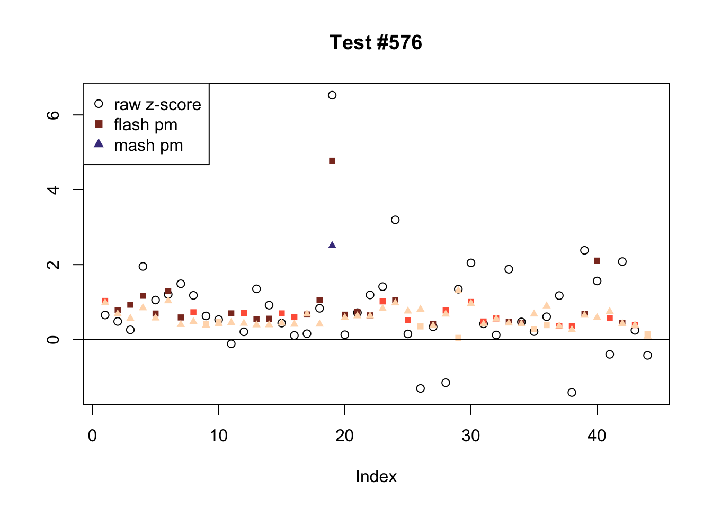
Expand here to see past versions of flnotm-1.png:
| Version | Author | Date |
|---|---|---|
| 89b9e69 | Jason Willwerscheid | 2018-06-26 |
Expand here to see past versions of flnotm-2.png:
| Version | Author | Date |
|---|---|---|
| 89b9e69 | Jason Willwerscheid | 2018-06-26 |
Expand here to see past versions of flnotm-3.png:
| Version | Author | Date |
|---|---|---|
| 89b9e69 | Jason Willwerscheid | 2018-06-26 |
Expand here to see past versions of flnotm-4.png:
| Version | Author | Date |
|---|---|---|
| 89b9e69 | Jason Willwerscheid | 2018-06-26 |
Expand here to see past versions of flnotm-5.png:
| Version | Author | Date |
|---|---|---|
| 89b9e69 | Jason Willwerscheid | 2018-06-26 |

Expand here to see past versions of flnotm-6.png:
| Version | Author | Date |
|---|---|---|
| 89b9e69 | Jason Willwerscheid | 2018-06-26 |
Effects significant in MASH but not FLASH
There are seven tests for which MASH declares significant 36 or more conditions that FLASH finds to be insignficant. I find these results to be more puzzling than the above results. It is clear that MASH is finding “identical effects” in most of these examples (6278, 10243, 12011, 12987, 15355), and it is true that these are all cases in which the mean effect size is located away from zero. But it’s not immediately clear that the latter is not simply the result of chance.
The other two examples (428 and 10404) are fairly baffling. Here both MASH and FLASH find an effect that is shared among brain tissues, but MASH finds smaller (and uneven) significant effects in nearly all of the other conditions. I don’t know what’s happening here.
mnotfl <- !fl.signif & m.signif
ex_mnotfl <- which(colSums(mnotfl) >= 36)
legend_loc = c("topright", "bottomright", "topleft", "topleft", "bottomleft", "topleft", "bottomright")
for (i in 1:length(ex_mnotfl)) {
plot_comparison(ex_mnotfl[i], legend_loc[i])
}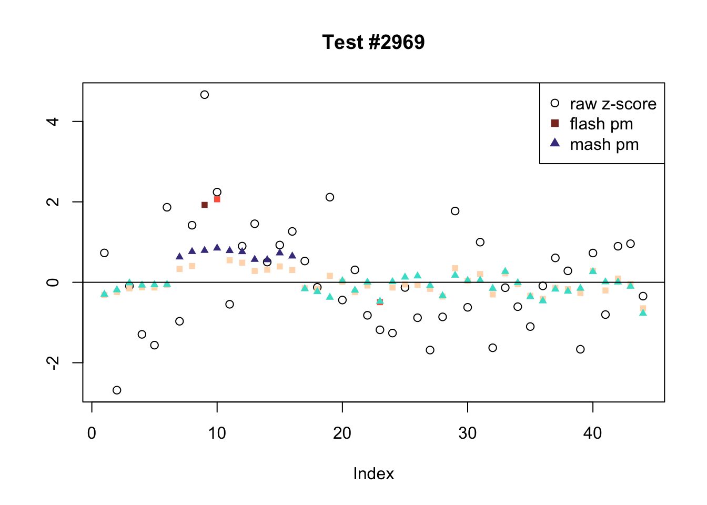
Expand here to see past versions of mnotfl-1.png:
| Version | Author | Date |
|---|---|---|
| 89b9e69 | Jason Willwerscheid | 2018-06-26 |
Expand here to see past versions of mnotfl-2.png:
| Version | Author | Date |
|---|---|---|
| 89b9e69 | Jason Willwerscheid | 2018-06-26 |
Expand here to see past versions of mnotfl-3.png:
| Version | Author | Date |
|---|---|---|
| 89b9e69 | Jason Willwerscheid | 2018-06-26 |
Expand here to see past versions of mnotfl-4.png:
| Version | Author | Date |
|---|---|---|
| 89b9e69 | Jason Willwerscheid | 2018-06-26 |
Expand here to see past versions of mnotfl-5.png:
| Version | Author | Date |
|---|---|---|
| 89b9e69 | Jason Willwerscheid | 2018-06-26 |
Expand here to see past versions of mnotfl-6.png:
| Version | Author | Date |
|---|---|---|
| 89b9e69 | Jason Willwerscheid | 2018-06-26 |
Expand here to see past versions of mnotfl-7.png:
| Version | Author | Date |
|---|---|---|
| 89b9e69 | Jason Willwerscheid | 2018-06-26 |
Tests for which MASH and FLASH agree
The following are all examples in which MASH and FLASH agree for all conditions. (There are many such examples — I sampled six of them at random.) The first five examples are all cases in which effects are uniformly large and obvious. The last example (14815) is more interesting.
agree <- which(colSums(flnotm) == 0 & colSums(mnotfl) == 0)
set.seed(1)
agree <- sample(agree, 6)
legend_loc = c("bottomleft", "bottomright", "topleft", "topleft", "topleft", "topleft")
for (i in 1:length(agree)) {
plot_comparison(agree[i], legend_loc[i])
}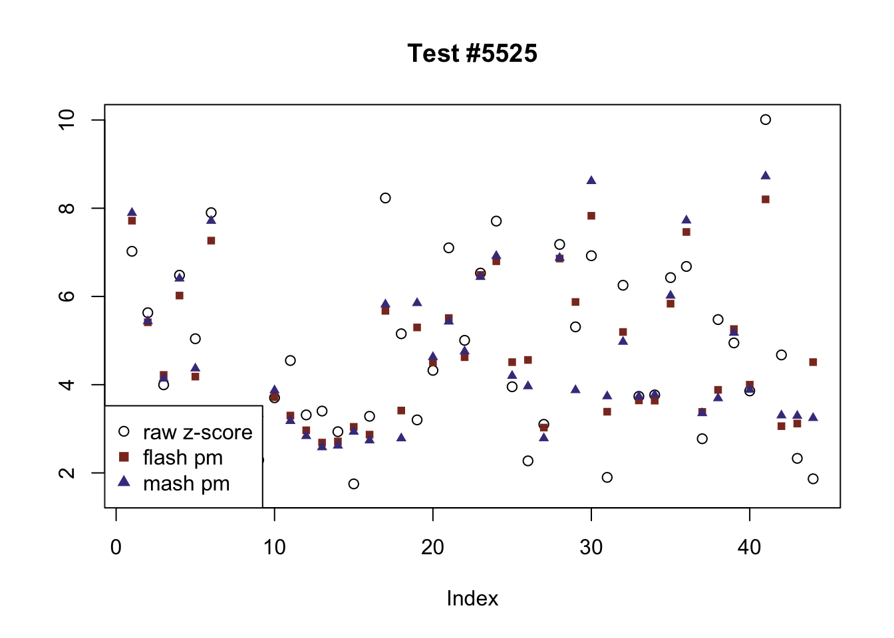
Expand here to see past versions of agree-1.png:
| Version | Author | Date |
|---|---|---|
| 89b9e69 | Jason Willwerscheid | 2018-06-26 |
Expand here to see past versions of agree-2.png:
| Version | Author | Date |
|---|---|---|
| 89b9e69 | Jason Willwerscheid | 2018-06-26 |
Expand here to see past versions of agree-3.png:
| Version | Author | Date |
|---|---|---|
| 89b9e69 | Jason Willwerscheid | 2018-06-26 |
Expand here to see past versions of agree-4.png:
| Version | Author | Date |
|---|---|---|
| 89b9e69 | Jason Willwerscheid | 2018-06-26 |
Expand here to see past versions of agree-5.png:
| Version | Author | Date |
|---|---|---|
| 89b9e69 | Jason Willwerscheid | 2018-06-26 |
Expand here to see past versions of agree-6.png:
| Version | Author | Date |
|---|---|---|
| 89b9e69 | Jason Willwerscheid | 2018-06-26 |
FLASH factors
The factors (as fitted on the “strong” tests) are as follows. The PVE given is the proportion of variance explained for the final fit.
missing.tissues <- c(7, 8, 19, 20, 24, 25, 31, 34, 37)
gtex.colors <- read.table("https://github.com/stephenslab/gtexresults/blob/master/data/GTExColors.txt?raw=TRUE", sep = '\t', comment.char = '')[-missing.tissues, 2]
par(mar=c(1,1,1,1))
par(mfrow=c(3,2))
fl.l <- flash_get_l(fl)
for(i in 1:30){
barplot(fl.l[, i], main=paste0('Factor ', i, ': pve = ', round(final.pve[i], 4)), las=2, cex.names = 0.4, col=as.character(gtex.colors), names="")
}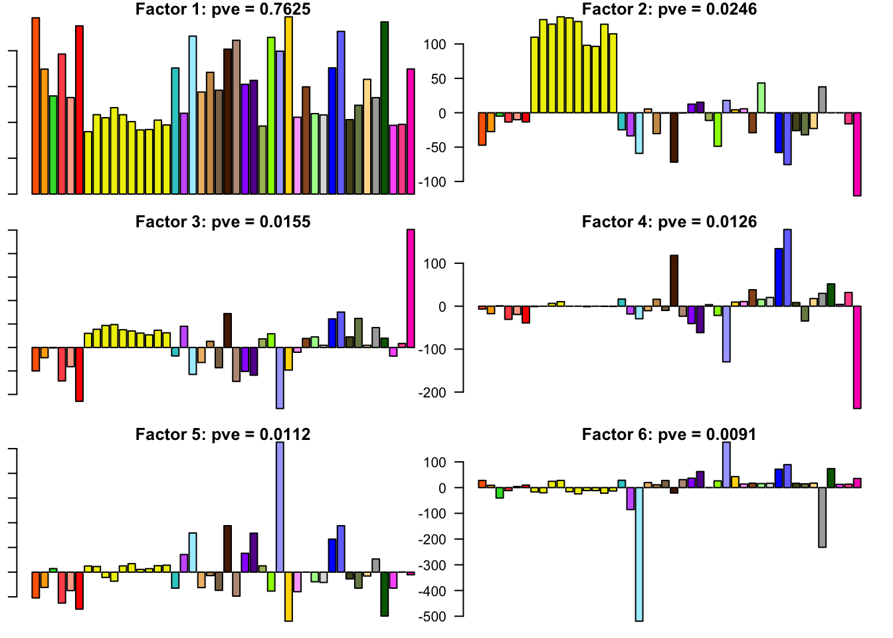
Expand here to see past versions of flash_factors-1.png:
| Version | Author | Date |
|---|---|---|
| 89b9e69 | Jason Willwerscheid | 2018-06-26 |
Expand here to see past versions of flash_factors-2.png:
| Version | Author | Date |
|---|---|---|
| 89b9e69 | Jason Willwerscheid | 2018-06-26 |
Expand here to see past versions of flash_factors-3.png:
| Version | Author | Date |
|---|---|---|
| 89b9e69 | Jason Willwerscheid | 2018-06-26 |
Expand here to see past versions of flash_factors-4.png:
| Version | Author | Date |
|---|---|---|
| 89b9e69 | Jason Willwerscheid | 2018-06-26 |
Expand here to see past versions of flash_factors-5.png:
| Version | Author | Date |
|---|---|---|
| 89b9e69 | Jason Willwerscheid | 2018-06-26 |
Code
Click “Code” to view the code used to obtain the above results.
devtools::load_all("/Users/willwerscheid/GitHub/flashr2/")
library(mashr)
library(corrplot)
source("./code/fits.R")
source("./code/utils.R")
gtex <- readRDS(gzcon(url("https://github.com/stephenslab/gtexresults/blob/master/data/MatrixEQTLSumStats.Portable.Z.rds?raw=TRUE")))
strong <- gtex$strong.z
random <- gtex$random.z
# MASH ------------------------------------------------------------------
mdata.strong <- mash_set_data(strong, Shat = 1)
mdata.random <- mash_set_data(random, Shat = 1)
# 1. Learn "data-driven" loadings using "strong" tests
start_time <- Sys.time()
U.pca <- cov_pca(mdata.strong, 5)
U.ed <- cov_ed(mdata.strong, U.pca)
ed_time <- Sys.time() - start_time
# 2. Fit the model to the random tests to learn mixture weights
U.c <- cov_canonical(mdata.random)
start_time <- Sys.time()
m.random <- mash(mdata.random, Ulist = c(U.ed,U.c))
mrand_time <- Sys.time() - start_time
saveRDS(m.random, "./output/gtex2mrandfit.rds")
m.pi <- get_estimated_pi(m.random)
m.pi[m.pi > .00005] * 20000 # not sparse!
corrplot(m.random$fitted_g$Ulist[["ED_tPCA"]])
corrplot(m.random$fitted_g$Ulist[["ED_PCA_2"]])
corrplot(m.random$fitted_g$Ulist[["simple_het_2"]])
random.lfsr <- get_lfsr(m.random)
sum (random.lfsr > .05) / length(random.lfsr) # 0.76
# 3. Compute posterior summaries on the strong tests
start_time <- Sys.time()
m <- mash(mdata.strong, g=get_fitted_g(m.random), fixg=TRUE)
m_time <- Sys.time() - start_time
saveRDS(m, "./output/gtex2mfit.rds")
m.lfsr <- get_lfsr(m)
sum(m.lfsr > .05) / length(m.lfsr) # 0.44
get_loglik(m) # -1353494
# FLASH -----------------------------------------------------------------
fldata.strong <- flash_set_data(t(strong), S = 1)
fldata.random <- flash_set_data(t(random), S = 1)
# 1. Learn "data-driven" loadings using "strong" tests (use ebnm_pn
# for speed).
flash_fit.strong <- fit_flash(t(strong), Kmax=50, methods=3) # OHL
saveRDS(flash_fit.strong, "./output/gtexstrongfit.rds")
fl.strong <- flash_fit.strong$fits$OHL
flash_get_pve(fl.strong)[1:20] # 73% on first factor/loading
# 2. Fit the model to the random tests to learn the priors on the factors.
LL = flash_get_l(fl.strong)
fl.random <- flash_add_fixed_l(fldata.random, LL)
start_time <- Sys.time()
fl.random <- flash_backfit(fldata.random, fl.random, var_type="zero",
ebnm_fn = ebnm_ash, nullcheck=F, verbose=T)
end_time <- Sys.time() - start_time
flash_fit.random <- list()
flash_fit.random$fit <- fl.random
flash_fit.random$timing <- end_time
saveRDS(flash_fit.random, "./output/gtexrandomfit.rds")
flash_get_pve(fl.random) # now only 21%
# 3. Compute posterior summaries on the strong tests, using g_f from step 2.
fl <- flash_add_fixed_l(fldata.strong, LL)
start_time <- Sys.time()
fl <- flash_backfit(fldata.strong, fl, var_type="zero", ebnm_fn = ebnm_ash,
gf=flash_get_gf(fl.random), fixgf=T, nullcheck=F, verbose=T)
end_time <- Sys.time() - start_time
# likelihood: -1348502
flash_fit.final <- list()
flash_fit.final$fit <- fl
flash_fit.final$timing <- end_time
saveRDS(flash_fit.final, "./output/gtex2flfit.rds")
# Calculate LFSR by sampling from the posterior
fl.sampler <- flash_lf_sampler(fldata.strong, fl, ebnm_fn=ebnm_ash,
fixed="loadings")
set.seed(1)
fl.samp <- fl.sampler(200)
fl.lfsr <- flash_lfsr(fl.samp)
saveRDS(fl.lfsr, "./output/gtex2lfsr.rds")
sum(fl.lfsr > .05) / length(fl.lfsr) # 0.50
fl.pm <- flash_get_lf(fl)
m.pm <- t(get_pm(m2))
png("./output/gtex2compare.png")
plot(as.vector(fl.pm), as.vector(m.pm), xlab="FLASH PM", ylab="MASH PM",
main="Posterior means on GTEx data", pch='.')
abline(0, 1, lty=2)
dev.off()
cor(as.vector(fl.pm), as.vector(m.pm)) # 0.98
confusion_matrix <- function(t) {
mash_signif <- t(m.lfsr) <= t
flash_signif <- fl.lfsr <= t
round(table(mash_signif, flash_signif)
/ length(mash_signif), digits=3)
}
confusion_matrix(.05)
confusion_matrix(.01)
calibrate_t <- function(t) {
mash_signif <- t(m.lfsr) <= t
flash_signif <- fl.lfsr <= .05
(sum(mash_signif & flash_signif) + sum(!mash_signif & !flash_signif)) / length(mash_signif)
}
ts <- seq(.005, .15, by=.005)
calibrated <- rep(0, length(ts))
for (j in 1:length(ts)) {
calibrated[j] <- calibrate_t(ts[j])
}
plot(ts, calibrated, type='l')
mash_t <- ts[which.max(calibrated)]
fl.signif <- fl.lfsr <= .05
m.signif <- m.lfsr <= mash_t
flnotm <- fl.signif & !t(m.signif)
ex_flnotm <- which(colSums(flnotm) >= 25)
mnotfl <- !fl.signif & t(m.signif)
ex_mnotfl <- which(colSums(mnotfl) >= 38)
agree <- which(colSums(flnotm) == 0 & colSums(mnotfl) == 0)
agree <- sample(agree, 4)
# plot_comparison <- function(n) {
# pch = rep(1, 44)
# pch[fl.lfsr[, n] <= .05 | m.lfsr[n, ] <= .05] <- 19
# clr = rep(1, 44)
# clr[fl.lfsr[, n] <= .05] <- "red4"
# clr[fl.lfsr[, n] <= .01] <- "red1"
# clr[m.lfsr[n, ] <= .05] <- "blue4"
# clr[m.lfsr[n, ] <= .01] <- "blue1"
# clr[fl.lfsr[, n] <= .05 & m.lfsr[n, ] <= .05] <- "purple"
# plot(strong[n, ], pch=pch, col=clr)
# #plot((1 - pnorm(abs(strong[n, ])))*sign(strong[n, ]),
# #ylab="", pch=19, ylim=c(-1, 1))
# #points(fl.lfsr[, n], pch=2, ylab="")
# #points(m.lfsr[n, ], pch=3)
# #abline(.05, 0)
# #abline(-.05, 0)
# segments(6.5, -.05, 6.5, .05)
# segments(16.5, -.05, 16.5, .05)
# }
plot_comparison <- function(n) {
plot(strong[n, ], pch=1, col="black", ylab="",
main=paste0("Test #", n))
col = rep("peachpuff", 44)
col[fl.lfsr[, n] <= .05] <- "tomato"
col[fl.lfsr[, n] <= .01] <- "tomato4"
points(fl.pm[, n], pch=15, col=col, cex=.8)
col = rep("peachpuff", 44)
col[m.lfsr[n, ] <= mash_t] <- "turquoise"
col[m.lfsr[n, ] <= mash_t/5] <- "slateblue4"
points(m.pm[, n], pch=17, col=col, cex=.8)
abline(0, 0)
segments(6.5, -2, 6.5, 2)
segments(16.5, -2, 16.5, 2)
}
for (n in ex_flnotm) {
plot_comparison(n)
}
for (n in ex_mnotfl) {
plot_comparison(n)
}
for (n in agree) {
plot_comparison(n)
}Session information
sessionInfo()R version 3.4.3 (2017-11-30)
Platform: x86_64-apple-darwin15.6.0 (64-bit)
Running under: macOS Sierra 10.12.6
Matrix products: default
BLAS: /Library/Frameworks/R.framework/Versions/3.4/Resources/lib/libRblas.0.dylib
LAPACK: /Library/Frameworks/R.framework/Versions/3.4/Resources/lib/libRlapack.dylib
locale:
[1] en_US.UTF-8/en_US.UTF-8/en_US.UTF-8/C/en_US.UTF-8/en_US.UTF-8
attached base packages:
[1] stats graphics grDevices utils datasets methods base
other attached packages:
[1] corrplot_0.84 mashr_0.2-7 ashr_2.2-7 flashr_0.5-8
loaded via a namespace (and not attached):
[1] Rcpp_0.12.17 pillar_1.2.1 plyr_1.8.4
[4] compiler_3.4.3 git2r_0.21.0 workflowr_1.0.1
[7] R.methodsS3_1.7.1 R.utils_2.6.0 iterators_1.0.9
[10] tools_3.4.3 testthat_2.0.0 digest_0.6.15
[13] tibble_1.4.2 evaluate_0.10.1 memoise_1.1.0
[16] gtable_0.2.0 lattice_0.20-35 rlang_0.2.0
[19] Matrix_1.2-12 foreach_1.4.4 commonmark_1.4
[22] yaml_2.1.17 parallel_3.4.3 mvtnorm_1.0-7
[25] ebnm_0.1-11 withr_2.1.1.9000 stringr_1.3.0
[28] roxygen2_6.0.1.9000 xml2_1.2.0 knitr_1.20
[31] devtools_1.13.4 rprojroot_1.3-2 grid_3.4.3
[34] R6_2.2.2 rmarkdown_1.8 rmeta_3.0
[37] ggplot2_2.2.1 magrittr_1.5 whisker_0.3-2
[40] backports_1.1.2 scales_0.5.0 codetools_0.2-15
[43] htmltools_0.3.6 MASS_7.3-48 assertthat_0.2.0
[46] softImpute_1.4 colorspace_1.3-2 stringi_1.1.6
[49] lazyeval_0.2.1 munsell_0.4.3 doParallel_1.0.11
[52] pscl_1.5.2 truncnorm_1.0-8 SQUAREM_2017.10-1
[55] R.oo_1.21.0 This reproducible R Markdown analysis was created with workflowr 1.0.1
Comments on MASH fit
It took 2.4 minutes to run Extreme Deconvolution to find “data-driven” covariance matrices. The MASH fit on the random subset of tests (to determine mixture weights) required 2.8 minutes, and the final MASH fit on the “strong” tests required only 18 seconds.
The estimated mixture weights were as follows. Note in particular that there are large weights on the data-driven matrices “ED_tPCA” and “ED_PCA_2”, as well as on the canonical “equal_effects” matrix. There are moderate weights on the null matrix, some unique effects (including Testis, Thyroid, and Cells_Transformed_fibroblasts), and two of the canonical “simple_het” matrices (where effect sizes are assumed to be of equal variance and equally correlated, with correlation coefficients of, respectively, 0.25 and 0.5).
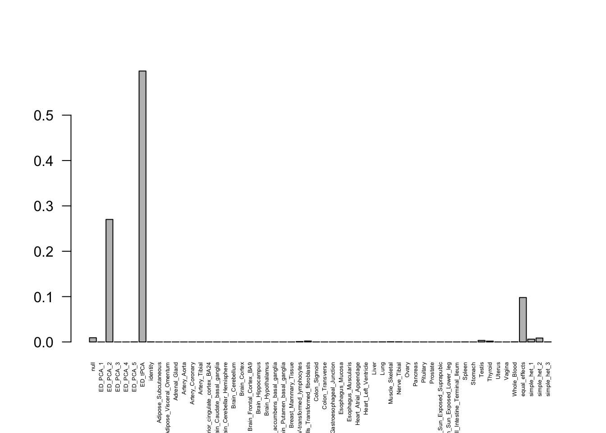
Correlation plots for the data-driven matrices are as follows. The first (“ED_tPCA”) describes effects that are strongly correlated across a handful of tissues (which, notably, does not include brain tissues).
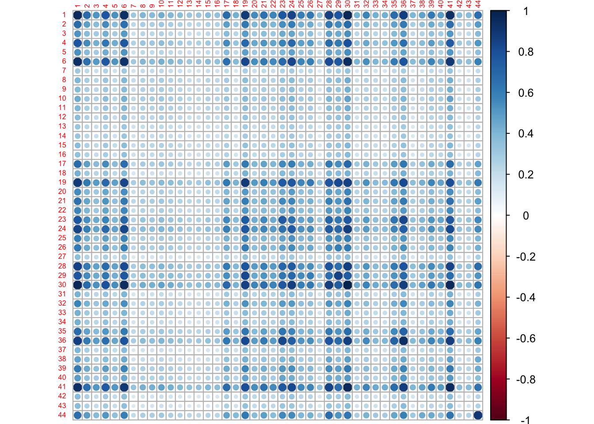
The second (“ED_PCA_2”) describes a pattern of strong correlation among brain tissues and, interestingly, strong anti-correlation with whole blood.
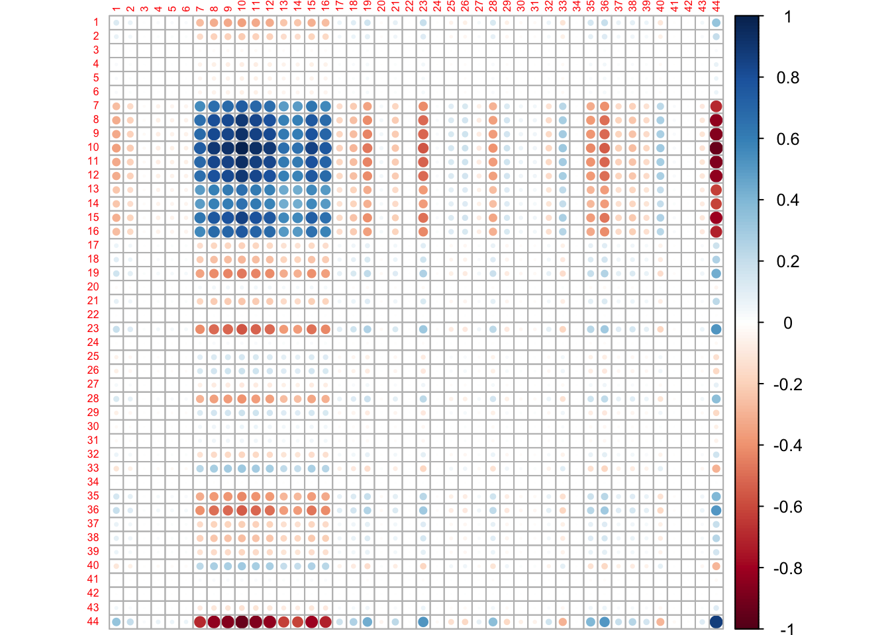